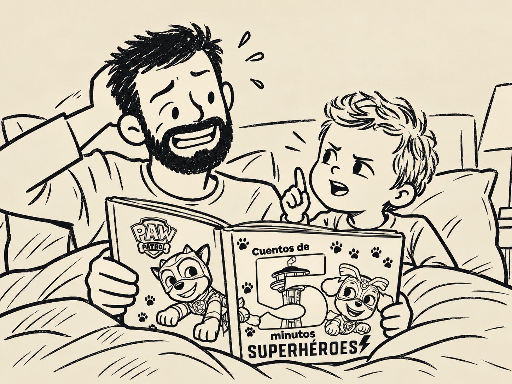

Rubble y la cuántica
«… la villana robó la espada de poder de Bahía Aventura y la escondió en su guarida. Por desgracia, la entrada estaba protegida por una malla de rayos láser.
Pero la Patrulla Canina nunca se rinde. Así que Rubble fue al Centro de Mando y se puso su traje de superpoderes, que le permitía hacerse cada vez más pequeño.
Rubble se hizo diminuto y consiguió pasar entre los rayos sin tocarlos. Una vez dentro, llegó hasta el mecanismo que controlaba los láseres y los desactivó.
A continuación, Skye voló formando un torbellino y rescató a la alcaldesa Goodway y a su mascot…»
—Pero papá, si los rayos láser estuviesen más cerca unos de otros, Rubble no habría cabido.
# Bueno, aunque los láseres estuviesen más juntos, si Rubble puede hacerse cada vez más pequeño, podría hacerse lo suficientemente pequeño como para pasar entre ellos.
—Pero papá, ¿y si los láseres se juntan tanto que no cabe ni una canica?
# Entonces Rubble podría hacerse tan pequeño como un grano de arena.
—¿Y si no cabe ni un grano de arena?
# Pues se hace más pequeño que un grano de arena.
—Pero eso tiene un límite, ¿no? Tiene que haber un momento en que ya no pueda hacerse más pequeño.
# No. Si entre los dos láseres sigue habiendo una distancia, por pequeña que sea, Rubble solo tiene que hacerse todavía más pequeño hasta caber.
—Pero tiene que haber una distancia mínima.
# No necesariamente. La mecánica cuántica nos dice que ciertas magnitudes, como la energía, están cuantizadas. Pero que una magnitud esté cuantizada no significa que todas las magnitudes físicas lo estén. No puedes concluir que el espacio esté dividido en pequeños trocitos.
—¿Y la longitud de Planck?
# ¿Qué pasa con la longitud de Planck?
—Que por debajo de esa escala ya no sabemos describir bien lo que ocurre.
# Sí, pero eso no significa que sea la distancia mínima que puede existir. La longitud de Planck no es el píxel del universo.
—Entonces ¿qué pasa si Rubble se hace más pequeño que la longitud de Planck?
# No lo sabemos.
—Entonces admites que no sabes si Rubble puede seguir haciéndose pequeño indefinidamente.
# No he dicho eso.
—Acabas de decir que no lo sabemos.
# He dicho que no sabemos qué ocurre a esas escalas.
—Entonces no sabes si Rubble cabría.
# A ver, colega. Tú tienes cuatro años y yo un doctorado. Yo creo que el espacio es continuo.
—Argumentum ad verecundiam. Que tengas un doctorado no hace verdadera tu afirmación.
# No he dicho que la haga verdadera. He dicho que tengo un doctorado y tú cuatro años.
—Eso empeora bastante el argumento.
# Además, no es ciencia que exista una longitud mínima. Hay distintas propuestas sobre cómo funciona la realidad a esas escalas y ninguna ha demostrado que el espacio esté formado por unidades indivisibles.
—Pero tampoco han demostrado que sea continuo.
# No.
—Entonces estamos de acuerdo.
# No estamos de acuerdo.
—¿En qué no estamos de acuerdo?
# En que yo creo que el universo es continuo.
—Pero papá, no puedes resolver una cuestión científica diciendo «yo creo que…».
# Sí puedo. Acabo de hacerlo.
—Papá, tú vas por la vida criticando a la gente que lee el horóscopo, a los que meditan porque han visto un vídeo sobre las energías y a los que toman homeopatía porque alguien les ha explicado que el agua tiene memoria. Y ahora llegas a una parte del universo que no entiendes, descartas una posibilidad porque te parece contraintuitiva y dices «yo creo que el espacio es continuo». ¿Cuál es la diferencia?
# Que yo he llegado hasta aquí leyendo.
—Eso solo significa que tardas más en llegar a creer en cosas.
# No es lo mismo.
—¿Por qué?
# Porque yo sé de lo que estoy hablando.
—Eso dicen todos.
# A ver, colega, ¿qué me estás contando? Tú crees en los Reyes Magos. No eres quién para venir a darme lecciones de epistemología. Acabamos de escribir las cinco palabras con P para mañana y con «PU» la única que se te ha ocurrido ha sido «PUPA».
—Si entras en descalificaciones personales entiendo que he ganado la discusión.
# Buenas noches, Nico.
—Buenas noches, papi.
# Y Rubble cabe.
—Eso no lo sabes.
